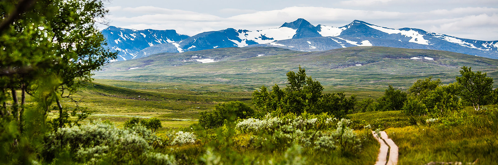

Startsida • Meritförteckning • Kontaktuppgifter • Om mig
Om mig

Bakgrund
Jag är uppvuxen i Nora i Örebro län. Efter grundskola och gymnasium, lite jobb och en resa i Sydostasien, började jag plugga. Så småningom landade jag i idén om att plugga till logoped. 4 år senare, 1997, tog jag examen. Jag har arbetat som logoped sedan dess, men har nu beslutat mig för att byta bana.
Nu bor jag i Huddinge centrum. Varannan vecka med mina två barn, och varannan vecka själv. Ett stenkast bort bor min pojkvän.
Intressen
I tidigare år har jag alltid hållit på med musik. Musiken ligger mig fortfarande varmt om hjärtat, även om jag inte är aktiv utövare längre.
Jag uppskattar mycket att umgås med mina barn och min pojkvän. Gärna i aktiviteter, men hemma-mys med god mat och film är verkligen inte att underskatta!
Mitt största aktiva intresse nu kretsar kring handarbete.
Jag är uppvuxen med en mamma som alltid var aktiv med handarbete och hemslöjd,
och jag kan nu i vuxen ålder verkligen uppskatta hennes stora kunnande inom många områden.
Stickning är det jag ägnar mig åt själv, men jag har i perioder tidigare hållit på med mycket annat
som t ex lapptäckessömnad, virkning, nålbindning, knyppling...
Jag är väldigt nyfiken på att lära mig nytt - jag har nosat lite på keramik och täljning,
och hoppas att kunna lära mig mer vid tillfälle.

Generellt mår jag väldigt gott av att röra på mig, och har genom åren haft lite olika träningsinriktningar på motionärsnivå. För närvarande har jag en period då jag gärna springer. Inomhus på löpand nu under vintern, och så får jag se om vår och barmark kommer att locka ut mig på riktiga vägar.
En annan passion är vandring. Barndomens påsklov och somrar i Frostviken, Jämtland, har satt spår i ryggmärgen
och har nu väckts till ett eget intresse. Även mina föräldrars stora förtjusning för svamp- och bärplockning har bidragit.
Jag har de senaste åren vandrat i Jämtlandsfjällen med mina barn,
och har även provat att sova i vindskydd vilket gett mycket mersmak.
Jag går mer än gärna på kortare turer i de områden som finns i närheten.

...och lite allmänt
Jag är en glad och nyfiken person, som har lätt att tycka om det jag företar mig. Tycker mycket om att lära mig nya saker eftersom jag gillar att ha en bred förståelse för hur saker fungerar "bakom kulisserna".
2014 blev jag sjukskriven för utmattningssyndrom. Sedan dess har jag långsamt kommit tillbaka, och är nu igen i ett läge där heltidssysselsättning är möjlig (för närvarande i form av studier). Den erfarenheten har lärt mig mycket om hur jag fungerar och om vad som är viktigt i form av återhämtning.